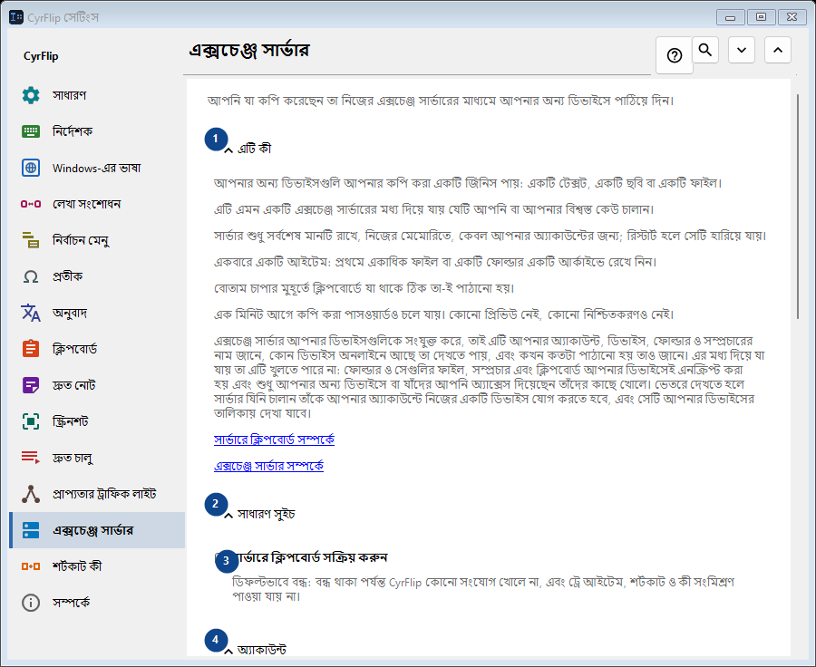
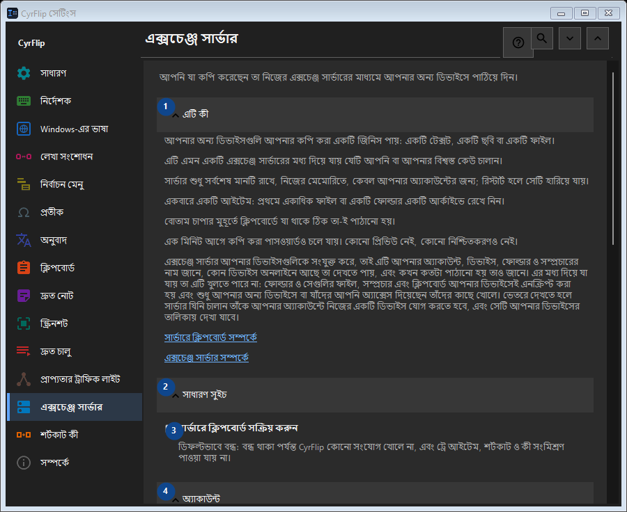

এক্সচেঞ্জ সার্ভার
এর কাজ
আপনি যা কপি করেছেন তা নিজের এক্সচেঞ্জ সার্ভারের মাধ্যমে আপনার অন্য ডিভাইসে পাঠিয়ে দিন।


ব্যবহারের ক্রম
সেটিং সঙ্গে সঙ্গে প্রয়োগ হয়। নির্দিষ্ট ক্রম নেই; নিচের দলগুলি ব্যবহার করুন।
উপাদান
1. এটি কী
উল্লিখিত কাজের জন্য এই নির্দেশ ব্যবহার করুন। মেনে নেওয়ার আগে নিশ্চিতকরণ পড়ুন।
আপনার শর্টকাট2. সাধারণ সুইচ
উল্লিখিত কাজের জন্য এই নির্দেশ ব্যবহার করুন। মেনে নেওয়ার আগে নিশ্চিতকরণ পড়ুন।
আপনার শর্টকাট3. সার্ভারে ক্লিপবোর্ড সক্রিয় করুন
ডিফল্টভাবে বন্ধ: বন্ধ থাকা পর্যন্ত CyrFlip কোনো সংযোগ খোলে না, এবং ট্রে আইটেম, শর্টকাট ও কী সংমিশ্রণ পাওয়া যায় না।
আপনার শর্টকাট4. অ্যাকাউন্ট
উল্লিখিত কাজের জন্য এই নির্দেশ ব্যবহার করুন। মেনে নেওয়ার আগে নিশ্চিতকরণ পড়ুন।
আপনার শর্টকাট5. অ্যাকাউন্ট যোগ করুন..
«সার্ভারে ক্লিপবোর্ড সক্রিয় করুন» বন্ধ থাকলে এটি পাওয়া যায় না - আগে ওই সুইচটি চালু করুন। এই উপাদান এখন উপলব্ধ নয়। আগে বৈশিষ্ট্য চালু করুন বা একটি এন্ট্রি বাছুন।
আপনার শর্টকাট6. কী সংমিশ্রণ ও শর্টকাট
উল্লিখিত কাজের জন্য এই নির্দেশ ব্যবহার করুন। মেনে নেওয়ার আগে নিশ্চিতকরণ পড়ুন।
আপনার শর্টকাট7. ক্লিপবোর্ড সার্ভারে পাঠান
«সার্ভারে ক্লিপবোর্ড সক্রিয় করুন» বন্ধ থাকলে এটি পাওয়া যায় না - আগে ওই সুইচটি চালু করুন। এই উপাদান এখন উপলব্ধ নয়। আগে বৈশিষ্ট্য চালু করুন বা একটি এন্ট্রি বাছুন।
আপনার শর্টকাট8. বদলান - ক্লিপবোর্ড সার্ভারে পাঠান
«সার্ভারে ক্লিপবোর্ড সক্রিয় করুন» বন্ধ থাকলে এটি পাওয়া যায় না - আগে ওই সুইচটি চালু করুন। এই উপাদান এখন উপলব্ধ নয়। আগে বৈশিষ্ট্য চালু করুন বা একটি এন্ট্রি বাছুন।
আপনার শর্টকাট9. সার্ভার থেকে ক্লিপবোর্ড পান
«সার্ভারে ক্লিপবোর্ড সক্রিয় করুন» বন্ধ থাকলে এটি পাওয়া যায় না - আগে ওই সুইচটি চালু করুন। এই উপাদান এখন উপলব্ধ নয়। আগে বৈশিষ্ট্য চালু করুন বা একটি এন্ট্রি বাছুন।
আপনার শর্টকাট10. বদলান - সার্ভার থেকে ক্লিপবোর্ড পান
«সার্ভারে ক্লিপবোর্ড সক্রিয় করুন» বন্ধ থাকলে এটি পাওয়া যায় না - আগে ওই সুইচটি চালু করুন। এই উপাদান এখন উপলব্ধ নয়। আগে বৈশিষ্ট্য চালু করুন বা একটি এন্ট্রি বাছুন।
আপনার শর্টকাট11. “পাঠান” ডেস্কটপে রাখুন
«সার্ভারে ক্লিপবোর্ড সক্রিয় করুন» বন্ধ থাকলে এটি পাওয়া যায় না - আগে ওই সুইচটি চালু করুন। এই উপাদান এখন উপলব্ধ নয়। আগে বৈশিষ্ট্য চালু করুন বা একটি এন্ট্রি বাছুন।
আপনার শর্টকাট12. “পান” ডেস্কটপে রাখুন
«সার্ভারে ক্লিপবোর্ড সক্রিয় করুন» বন্ধ থাকলে এটি পাওয়া যায় না - আগে ওই সুইচটি চালু করুন। এই উপাদান এখন উপলব্ধ নয়। আগে বৈশিষ্ট্য চালু করুন বা একটি এন্ট্রি বাছুন।
আপনার শর্টকাট13. প্রাপ্ত ফাইল
উল্লিখিত কাজের জন্য এই নির্দেশ ব্যবহার করুন। মেনে নেওয়ার আগে নিশ্চিতকরণ পড়ুন।
আপনার শর্টকাট14. সার্ভার থেকে প্রাপ্ত ফাইলের ফোল্ডার
«সার্ভারে ক্লিপবোর্ড সক্রিয় করুন» বন্ধ থাকলে এটি পাওয়া যায় না - আগে ওই সুইচটি চালু করুন। এই উপাদান এখন উপলব্ধ নয়। আগে বৈশিষ্ট্য চালু করুন বা একটি এন্ট্রি বাছুন।
আপনার শর্টকাট15. বেছে নিন - সার্ভার থেকে প্রাপ্ত ফাইলের ফোল্ডার
«সার্ভারে ক্লিপবোর্ড সক্রিয় করুন» বন্ধ থাকলে এটি পাওয়া যায় না - আগে ওই সুইচটি চালু করুন। এই উপাদান এখন উপলব্ধ নয়। আগে বৈশিষ্ট্য চালু করুন বা একটি এন্ট্রি বাছুন।
আপনার শর্টকাট16. ফোল্ডার খুলুন - সার্ভার থেকে প্রাপ্ত ফাইলের ফোল্ডার
«সার্ভারে ক্লিপবোর্ড সক্রিয় করুন» বন্ধ থাকলে এটি পাওয়া যায় না - আগে ওই সুইচটি চালু করুন। এই উপাদান এখন উপলব্ধ নয়। আগে বৈশিষ্ট্য চালু করুন বা একটি এন্ট্রি বাছুন।
আপনার শর্টকাট